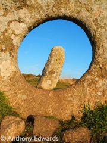
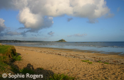

Tourism in Penzance & the Land's End Peninsula
Penzance is located on the south-westerly tip of England, nestled in the centre of Mounts Bay, and over looked by the majestic St Michael’s Mount. Penzance is Cornwall’s largest and most westerly borough with it’s location an ideal base for a holiday in Penwith. Its central location and excellent road links allow easy and convenient access to the best sights in Penwith, and many believe the best England has to offer. The coastline around the Land’s End Peninsula is dominated by the grandeur of the cliffs, which overlook the pristine sandy beaches and clear blue seas. Not to be outdone, the miles of rugged Cornish countryside with rolling hills is dotted with ancient monuments remind us of the long Celtic history and traditions the county has to offer.
No matter what you are looking for in a holiday, Penwith has something to offer. Ancient fishing villages, cliff top walks, sub-tropical gardens and an abundance of industrial and maritime heritage make Penwith a uniquely fascinating area. The peninsula's rugged coastline led to a hot spot for smugglers and wreckers, who stories have been passed down the generations. Influences from these days can still be felt in the town. Gilbert and Sullivan’s famous Pirates of Penzance is testament to the long standing maritime traditions.
Both countryside and coastline presents walkers with almost endless opportunities, whether you want a stroll along the cliff tops, overlooking secluded coves. Heading in land, the countryside offers wide open moorland, rolling hillsides and stunning granite headlands. Ideal for those who want to ‘escape the crowds: The well marked cliff tops, foot paths and bridal ways allow even the novice walker a safe passage. Many of the paths pass Celtic stone monuments, including stone circles, standing stones and settlements.
By far the most striking feature of Mounts Bay has to be St Michael’s Mount its self. The long standing castle, set atop a hill jutting from the sea just off Marazion beach, it’s accessible by foot at low tide via the Giants Causeway. The Minack Theatre is equally impressive, carved out of the granite cliffs offers shows all summer long, including local productions and larger ones from companies such as the Royal Shakespeare. Other must see attractions include the Lands End experience, Geevor Tin Mine, The Tate art gallery in St Ives, Paradise Park bird sanctuary in Hayle, Flambards theme park in Helston and the national Seal sanctuary at Gweek. Add to this numerous museums and art galleries, the finest food Cornwall has to offer and more restaurants that you could possibly want, Penzance is definitely the perfect place for a sea side holiday.
Welcome to West Cornwall